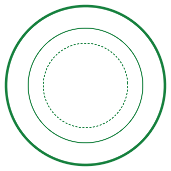

Basic Broadcast Technology: A CTE Pathway Course
Unit 5 - Audio Recording Techniques — Audio: Mic Selection and Placement


Daily Bellringer Writing Prompt
Loading prompt...
Unit 5: Audio Recording Techniques
Slide 1 of 12Lesson Resource & Reference Hub
Access official course references and field activities below.